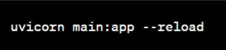

Você pode salvar esse código em um arquivo Python, por exemplo, main.py. Em seguida, você pode executar o aplicativo usando o servidor de desenvolvimento embutido do FastAPI, digitando o seguinte comando em um terminal:
Isso iniciará o servidor em http://localhost:8000. Você poderá acessar http://localhost:8000/items/42?q=test em um navegador ou usando ferramentas como cURL ou Postman para ver a resposta.
A rota ‘/’ retorna um objeto JSON simples com a mensagem "Hello World". A rota /items/{item_id} espera um parâmetro de caminho item_id como um número inteiro é um parâmetro de consulta opcional ‘q’. Ele retorna um objeto JSON com os valores passados nos parâmetros.